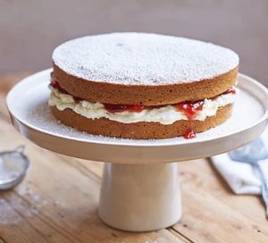

Vegan Sponge Cake

Description
Easy cake that does not take a lot of time to make! It's vegan too!
Ingredients
- 150g dairy-free spread, plus extra for the tins
- 300ml dairy-free milk, we used oat milk
- 1 tbsp cider vinegar
- 1 vanilla pod, seeds scraped
- 300g self-raising flour
- 200g golden caster sugar
- 1 tsp bicarbonate of soda
For the filling
- 100g dairy-free spread
- 200g icing sugar, plus extra for dusting
- 4 tbsp jam, we used strawberry
Steps
-
Heat the oven to 180C/160C fan/gas 4. Line the bases of 2 x 20cm
sandwich tins with baking parchment and grease with a little of the
dairy-free spread.
-
Put the dairy-free milk into a jug and add the vinegar, leave for a
few minutes until it looks a little lumpy. Put half of the vanilla
seeds and all the other cake ingredients into a large bowl, then pour
over the milk mixture. Using electric beaters or a wooden spoon, beat
everything together until smooth.
-
Divide the mix between your two tins, then bake in the centre of the
oven for 30-35 mins or until a skewer inserted into the middle of the
cakes comes out clean. Leave them in their tins until cool enough to
handle, then carefully turn out onto wire racks to cool completely.
-
While the cakes are cooling, make the filling. To make the vegan
buttercream, whisk or beat together the dairy-free spread, icing sugar
and remaining vanilla seeds until pale and fluffy. Dairy-free spreads
do vary, so if the spread you are using is quite soft, try to avoid
using electric beaters. Stir the ingredients together instead to avoid
overworking it. However, if the mixture is too firm, use electric
beaters to help lighten it and add 1-2 tbsp dairy-free milk when
whisking.
-
Spread the jam onto one of the cooled sponges, top with the
buttercream, then place the other sponge on top. Dust the assembled
cake with a little icing sugar or caster sugar before slicing.